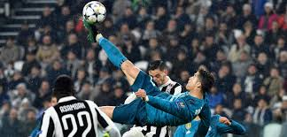

Mi comandante Cristiano Ronaldo dos Santos Aveiro, (Funchal, Madeira, 5 de febrero de 1985), más conocido como Cristiano Ronaldo, es un futbolista portugués que juega como delantero en la Juventus F. C. de la Serie A de Italia y en la selección de Portugal, de la que es capitán. Identificado habitualmente en los medios de comunicación con el numerónimo CR7,10n 2 es frecuentemente considerado el mejor futbolista del mundo11 y uno de los mejores de todos los tiempos,12 por un elevado número de personas y prensa vinculadas al deporte,n 3 así como también una de las figuras más mediáticas de su generación.13 Es, con 450 goles,14 el máximo goleador histórico del Real Madrid Club de Fútbol,n 415 consiguiéndolo en las nueve temporadas que jugó en este club.
2002-2003
2009-2018
2018
Cristiano Ronaldo se ve jugando hasta los 41 años, su futuro en el mundo de clubes es incierto si terminará su carrera en la Juventus o quizá regrese al Sporting... mi comandnate verá dónde termina su gloriosa carrera.